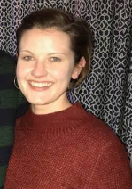

About Me

My name is Hilary Scott and I was born in Annapolis, Maryland. I've lived in Georgia since I was 10 years old,
and after graduating from Georgia Tech in 2012, I worked at a local startup - where I really found an interest
in learning the backend of the products and working directly with Engineering. I started working for
Salesforce
in 2015 on the Support Team, where I've really discovered the creative side of coding and web design. Through
working with clients to adjust their content to be compataible with our Product, I have learned how powerful
techincal
savvy along with our product knowledge can open a lot of opportunities. I've learned a ton of techincal things
in the last 4 years, but feel like I've just hit the tip of the iceberg!
I married my best friend in 2015 and after living in California for 3 years, we just moved back to Georgia
last summer - where we bought our new dream house. We have 2 corgis (one who we rescued out in CA), named
Bubsy (8)
and Webster (6).
I enjoy being outside, working out, playing tennis, spending time with my nephews, live music, and
binge-watching Netflix shows and movies.